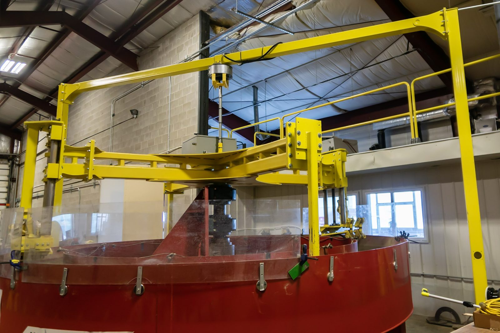
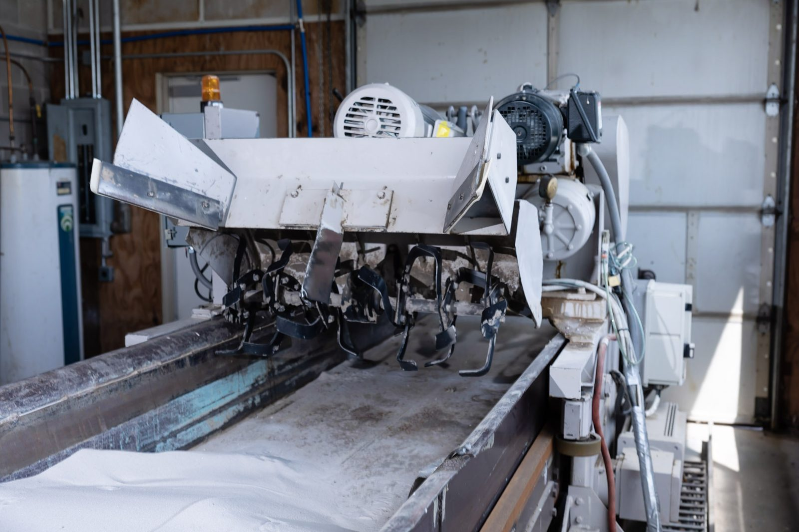
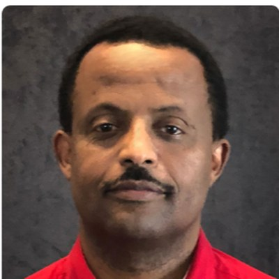

Soil Machine Dynamics Laboratory
The purpose of the lab is to evaluate machine system performance as equipment interacts with soil, measure soil compaction, and perform wear analysis of ground-engaging tools, for agriculture, construction, mining and extraterrestrial machines.
Inside the lab
A virtual tour of all three soil bins: soil preparation in the mobility soil bin, a single-tire test run, the circular wear testing bin and the GETs soil bin. 42 minutes, filmed 2021.

Watch the full tour on Vimeo · 42 minMission statement
The mission of the Soil Machine Dynamics Laboratory (SMDL) is to support:
- Research programs for off-road equipment design, performance analysis and simulation modeling of mobility systems, including tires, tracks and tractive devices; Ground Engaging Tools (GETs) and GETs wear; and testing services in soil mechanics and tire/track–soil contact area.
- Teaching programs for undergraduate and graduate education, with a focus on advanced machinery systems.
- Engineering outreach programs on soil–machine systems for tillage, soil compaction and traction.
Three state-of-the-art soil bins
A mobility soil bin, a Ground Engaging Tools (GETs) soil bin, and a circular wear testing bin, at the ISU Agricultural Engineering and Agronomy Research Farm near Boone, Iowa.
Mobility soil bin
Prepares soil and runs tire and track tests for tractive technology development, mobility, and soil–tire interaction studies. Mobility tests can be performed with tires or tracks, either towed or powered, and with or without slip control. A soil processing unit (rotary tiller, bucket-blade leveler and load-driven roller) creates uniform or stratified soil layers before each test.
Circular wear testing bin
Designed for wear studies of Ground Engaging Tools (GETs) in an abrasive pea-gravel medium. Two arms carry tillage tools and two carry reconditioning blades. Soil-engaging tools up to 0.5 m wide and 0.3 m deep can be tested, and an automated irrigation system monitors the moisture content of the pea-gravel medium.

GETs soil bin
Designed for testing scaled earth-moving attachments such as buckets, blades, and other soil-cutting devices. Bulldozer blades, wheel loader buckets, rippers (subsoilers) and grader blades can be tested. Soil reaction forces, moments and soil rupture measured in the bin can be scaled to actual equipment loading under field soil conditions.
Physical systems modeling and simulation of off-road machinery
Methodology & test development
High-fidelity calibration of soil and biomass materials, built on design of experiments, laboratory testing and industrial applications.
Learn more 02Multi-physics modeling
Material-to-machine interactions using FEM, CFD, DEM and multibody dynamics.
Learn more 03Testing of soil–machine systems
Tire and blade interaction, soil stress, soil cutting forces and tire/track forces for model validation.
Learn more 04Precision tillage & soil compaction
Measuring and predicting soil compaction and its relationship to yield.
Learn moreRecent publications
All publicationsA Non-Linear Bond Damping Formulation for the Discrete Element Modeling (DEM) of Flexible Fiber Model
Biosystems Engineering (Accepted) (2026).
Numerical modeling of plate sinkage and in-situ bevameter shear tests using FEM and the density-dependent NorSand critical state constitutive soil model
Journal of Terramechanics
Tillage-induced soil feature extraction and multi-sensors fusion for tillage system classification
Biosystems Engineering
DEM contact parameters of rice seed for mechanical seeding performance analysis
Biosystems Engineering
Simulation of interaction between soil and rotary tiller to predict the power consumption and investigation of surface soil mixing
Soil and Tillage Research

Dr. Mehari Tekeste
Associate Professor of Agricultural and Biosystems Engineering and Director of the SMDL. Editor of the Journal of Terramechanics, with over fifty published papers on soil dynamics, terramechanics and physics-based modeling of off-road machinery.
Sponsors and partners
Research at the SMDL is funded by federal agencies, associations and industry leaders in agricultural and construction equipment, tires and tillage.
Agencies and associations
- NASA
- USDA ARS
- USDA Hatch funds
- Iowa State Association of Counties
Equipment makers
- John Deere
- Caterpillar
- Vermeer
Tire makers
- Michelin
- Titan
- Firestone
- Alliance
- CFI
Tillage makers
- USM Wear Technologies
- Yetter
- Orthmann
- Unverferth
- Bourgault
More from the SMDL
Items to confirm before release
This box and the yellow strip at the top are removed in the final version.
- Layout follows the style of NASA's Moon Base page (dark sections, full-width photos and videos, large headings), with Iowa State colors and no NASA branding.
- Facility names, definitions and numbers follow the 2021 Resource article (pp. 14–16): mobility soil bin, GETs soil bin, circular wear testing bin.
- Photos come from the 2021 professional photo album. The mobility and circular wear banners are silent clips from the 2021 tour with no people in frame. The tour has no people-free footage of the GETs soil bin running, so its banner is a photo for now; a 20–30 second clip would complete it.
- Mission statement is the current site's wording, lightly edited for grammar.
- People: the student list comes from the current site (2021). Who should be listed now, and can we collect current photos?
- Publications and Google Scholar link come from the current site (vita of July 1, 2026). You mentioned two Google Scholar profiles; this one is linked from your site.
- Sponsor list: confirm it is current and OK to show publicly, and whether to add logos.
- "Space research" wording, and whether the lab name should mention virtual machine development or digital twins.
- Space research text comes from the 2025 CALS news story. Confirm the wording and that nothing is under NDA.